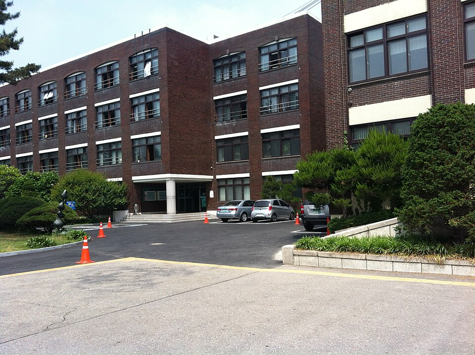

강남구는 한 구 안에서 동네마다 공부하는 방식이 다릅니다. 대치동은 학원 일정이 하루를 다 채우고, 압구정·신사 쪽은 학원과 개인 수업이 반씩 섞이고, 개포·수서 쪽은 이동 시간을 아끼려고 집으로 부르는 집이 많습니다. 휘문고(휘문고등학교)·중동고(중동고등학교)·경기고(경기고등학교)·숙명여고(숙명여자고등학교) 같은 고등학교와 대치중(대치중학교)·도곡중(도곡중학교)·역삼중(역삼중학교)·압구정중(압구정중학교)이 흩어져 있어, 같은 강남구라도 저녁 시간표가 완전히 다릅니다. 학원을 여러 개 도는 대신 한 과목을 깊게 잡고 싶을 때 1:1 중등 수학과외나 초등 영어과외를 찾게 됩니다.
오늘은 강남구로 직접 찾아가는 선생님들 가운데 맡는 과목이 서로 다른 두 분을 소개합니다. 한 분은 중·고등 수학을 보는 선생님, 한 분은 초등부터 고3까지 영어를 보는 선생님입니다.
강남구에서 중등 수학과외 문의가 들어오는 자리는 대개 중2 1학기와 고1 1학기입니다. 식이 길어지고 단원 사이의 연결이 생기면서 "계산은 맞는데 답이 틀린다"가 시작됩니다. 이 선생님을 소개하는 이유는 수업 밖의 시간을 관리하는 쪽이기 때문입니다. 학생별 캘린더에 수업 내용과 숙제를 남겨 두어, 보호자가 따로 묻지 않아도 진도와 과제 이행이 보입니다.
수학은 주 2회 수업보다 그 사이 닷새를 어떻게 쓰느냐에서 갈립니다. 당일 테스트로 지난 분량을 확인하고 넘어가는 방식이라, 숙제를 미뤄 두었다가 수업 직전에 몰아서 하는 습관이 있는 학생에게 특히 맞습니다. 중1부터 고2까지 한 사람이 이어서 볼 수 있어 학년이 바뀔 때마다 처음부터 다시 진단하지 않아도 됩니다.
이ㅇ원 선생님 상세 프로필 →강남구에서 초등 영어과외와 고등 영어과외를 동시에 찾는 집이 많은 이유는 두 시기의 고민이 다르기 때문입니다. 초등은 단어와 문장 만들기, 고등은 긴 지문에서 답의 근거를 찾는 일입니다. 이 선생님을 소개하는 이유는 그 두 구간을 한 사람이 이어서 볼 수 있기 때문입니다. 초1부터 고3까지 맡습니다.
수업은 문제를 많이 푸는 쪽보다 어떤 문제를 만나도 접근 순서를 떠올리게 하는 쪽입니다. 영어교육학을 전공했고 어학원과 대학에서 가르친 경력이 있어, 학생의 현재 수준에 맞춰 설명의 깊이를 조절하는 폭이 넓습니다. 대치동뿐 아니라 신사동·압구정동·역삼동까지 방문하고 평일과 주말 모두 수업이 가능해, 학원 일정 사이의 빈 시간에 맞추기 쉽습니다.
최ㅇ진 선생님 상세 프로필 →학교마다 진도와 시험 범위가 달라서, 학교별로 준비법을 따로 정리해 두었습니다.
관련 검색어: 강남구수학과외 · 강남구영어과외 · 대치동수학과외 · 휘문고내신 · 대치중수학과외
👉 강남구 수학과외 선생님 · 강남구 영어과외 선생님 · 강남구 관리 학교 전체 보기